שאלה 3 :קדם פרויקט –בדיקת הזחלן
לאחר שבניתם את הזחלן והרצתם את תוצאותיו. עליכם לבצע את הצעדים הבאים:
א. רשמו טכנולוגיות שונות מעניינות שהשתמשתם בהם בפרויקט.
PRAW (Python Reddit API Wrapper) ספרייה זו
מאפשרת גישה לReddit API , השתמשנו
בה כדי לשלוף פוסטים מ-Reddit
על פי מילות מפתח
ותנאים מוגדרים מראש.
dotenv כלי זה עוזר לטעון משתני סביבה מקובץ .env. הוא שימושי כדי להגן על המידע הרגיש כמו מזהים וסיסמאות של הAPI ולאפשר שינוי קל של ההגדרות הסביבתיות.
pandas ספרייה זו משמשת לניתוח וניהול נתונים ביעילות. בקוד שלנו, השתמשנו ב-pandas כדי ליצור DataFrame של התוצאות ולבצע חישובים ודירוגים שונים על פי נתוני המעורבות של הפוסטים.
NLTK (Natural Language Toolkit) השתמשנו ב-PorterStemmer מתוך ה-NLTK כדי לבצע סטמינג למילים בטקסטים.
re (Regular Expressions) ספרייה זו מאפשרת עבודה עם
ביטויים רגולריים כדי לבצע ניקוי של הטקסטים על ידי הסרת תווים מיוחדים והמרת
הטקסט לאותיות קטנות.
ב. כמה זמן רצו השאילתות שלכם?במה זה תלוי? האם לדעתכם ניתן לשפר זמן זה?
כל עוד
מבקשים כמות מוגבלת של קבצים (לדוגמא: 20) זמן ריצת השאילתה נע בין 0.50 ל0.8
שניות, תלוי בעומס על הAPI באותו רגע
ומורכבות השאילתה ששלחנו.
נוסף על כך מתבצע חישוב TFIDF שתלוי בזמן
עיבוד המעבד של המחשב ולוקח בין 0.1 ל0.2
שימוש במטמון יכול לשפר זמן זה במידה ומשתמשים בשאילתות אשר חוזרות על עצמם.
ג. האם בדפים שהוחזרו קיימים hubs? Authorities? נמקו.
הHUBS הם בעצם התתי-פורומים בREDDIT (SUBREDDITS) שמכילים נושאים רבים שבהם המשתמשים מרבים לשתף פוסטים.
הAUTHORITIES הם הפוסטים שחוזרים אלינו
המקושרים לHUBS
ד. בחרו 10 דפים שהזחלן החזיר, ואשר יש ביניהם קישורים .חשבו pageRank לכל דף, מומלץ להעזר בסקריפט מוכן. הציגו את החישובים ואת הדירוג הסופי.
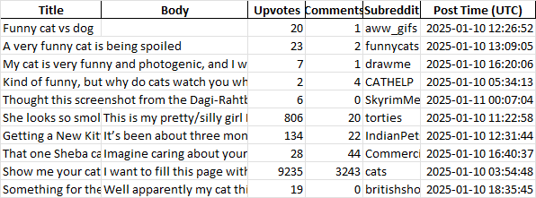
חישוב TF-IDF
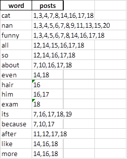
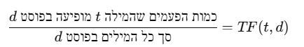
IDF - (Inverse Document Frequency)
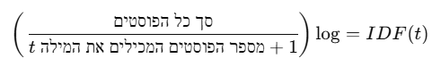
TF-IDF:
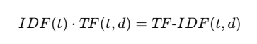
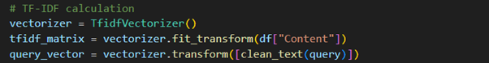
חישוב דמיון קוסינוס:
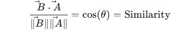
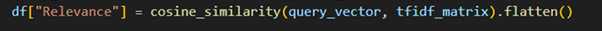
שימוש ב-לייקים ותגובות כמדד פפולריות של הפוסט:
· ניתן משקלים לפעולות שמשתמשים עושים על הפוסט בכדי לתת משקל לפוסטים בעלי חשיפה רבה (משקל של 0.7 ללייק ו0.3 לתגובה)
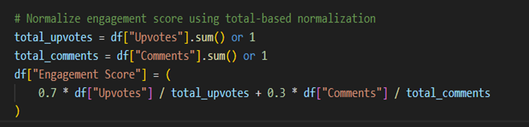
חישוב PAGERANK הסופי:
· משקל של 0.7 רלוונטיות ו0.3 חשיפה
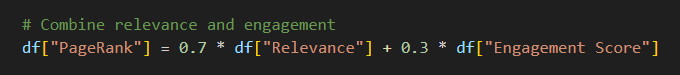
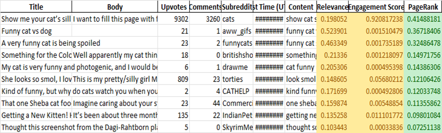
ה. הראו לשני משתמשים שונים את הדירוג מהסעיף הקודם, בקשו מהם לסמן relevance ובצעו feedback relevance .האם ניתן להציע שאילתא מותאמת על מנת לשפר תוצאות?
הצגנו את תוצאות החיפוש
לשני משתמשים פעילים ברדיט. מתוך התוצאות הצגנו 10 פוסטים שעלו מהחיפוש, ושאלנו אותם
עד כמה הם רלוונטיים עבורם. כלומר, בהתבסס על תוכן שהם נוהגים לצרוך ברדיט. שני המשתמשים
בחרו אילו פוסטים רלוונטיים עבורם. להלן רשימת הפוסטים אשר הצגנו להם:
משתמש ראשון: המשתמש הראשון הביע העדפה חזקה לתוכן מצחיק וחמוד הקשור לחתולים. הוא נהנה במיוחד מפוסטים כמו "Funny cat fails compilation" ו-"Cute kitten playing with yarn". הוא הרגיש שפוסטים אלה מדורגים גבוה בקטגוריית התוכן המצחיק והחמוד. עם זאת, המשתמש הצביע על חוסר עניין ספציפי בפוסט "Stray cats in my neighborhood need help". הוא ציין שפוסט זה לא נחשב בעיניו כמצחיק או מבדר. הוא המליץ שפוסט זה צריך להיות בעל דירוג נמוך יותר או אפילו יוסר מקטגוריית התוכן המצחיק. המשתמש הדגיש העדפה לראות יותר תוכן ויראלי ומצחיק, כגון "Hilarious cat vs cucumber videos" ו-"Cats vs Dogs: The ultimate showdown". סך הכל, המשתמש הראשון סימן 7 פוסטים רלוונטיים מתוך הרשימה,
משתמש שני: המשתמש השני התעניין לאחרונה בגידול חתולים והוא מאוד התרשם מהפוסט "How to train your cat to do tricks". הוא הדגיש את החשיבות של מידע מעשי עבור בעלי חתולים, שמתיישר היטב עם העדפות התוכן שלו. בנוסף, הוא הביע עניין רב בפוסטים אינפורמטיביים, מה שהופך פוסטים כמו The cutest kitten playing with a ball of yarn
ו Something for the Colonel to consider 😸לרלוונטיים במיוחד לטעמו. המשתמש היה מרוצה גם מהדירוג של "Funny cat fails compilation" המשתמש גם ציין שהפוסט " Show me your cat’s silliest facial expressionאינו מועדף עליו במיוחד ולכן היה מדרג נמוך יותר לעומת פוסטים אחרים. סך הכל, המשתמש השני סימן 6 פוסטים רלוונטיים מתוך הרשימה.
חישוב Precision ו-Recall: עבור Precision החישוב מתבצע על פי כמות הפוסטים הרלוונטיים חלקי ה-10 פוסטים שהחזרנו. לעומת זאת, ה-Recall יחושב לפי הערכה של כמות הפוסטים שיכולים לחזור אלינו בכל חיפוש שכמות זו הינה 2000.
User 1:
Precision = 7/10 = 0.7
Recall = 7/2000 = 0.0035
User 2:
Precision = 6/10 = 0.6
Recall = 6/2000 = 0.003
הצעות לשאילתות מותאמות עבור המשתמשים:
עבור משתמש ראשון: "funny cats" OR "funny pets"
עבור משתמש שני: "cat training" OR "funny cat moments"